Energy Drinks
Red Bull Energy Drink
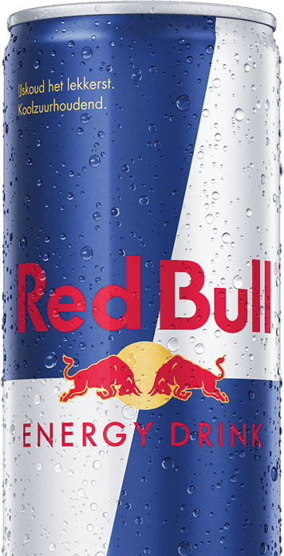Red Bull Sugar Free
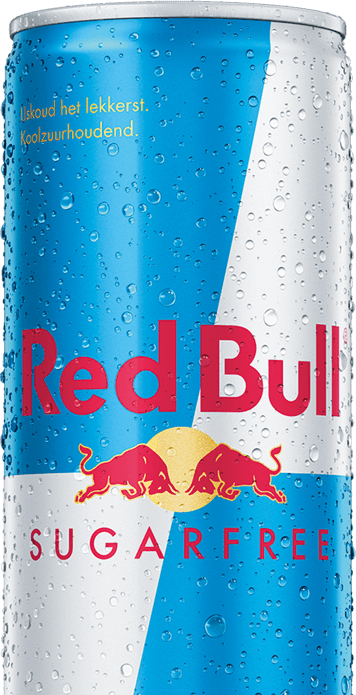Red Bull Zero
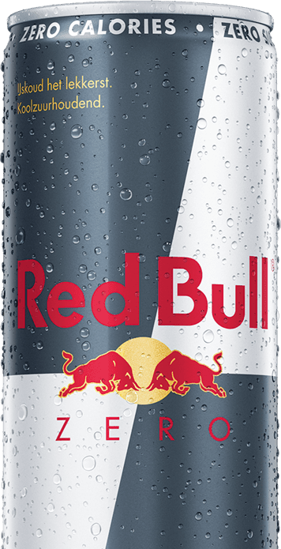Red Bull summer edition
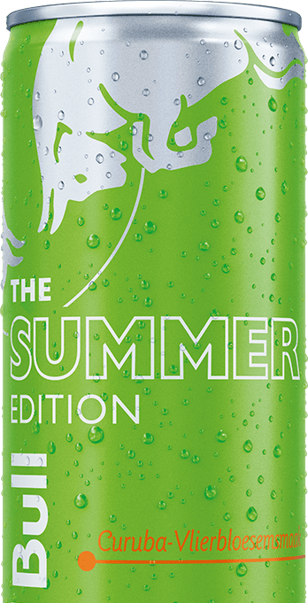Stories
Circus Bösch
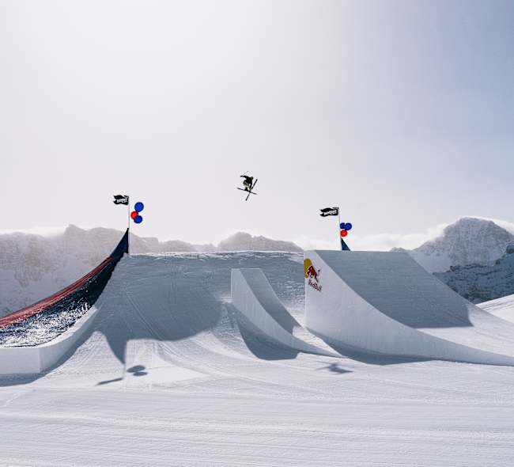Dames en heren, welkom bij een freestyle show zoals je het nog nooit...
FREESKI
2 minuten lezen
MT Pop wint Red Bull Dance Your Style World Final 2024
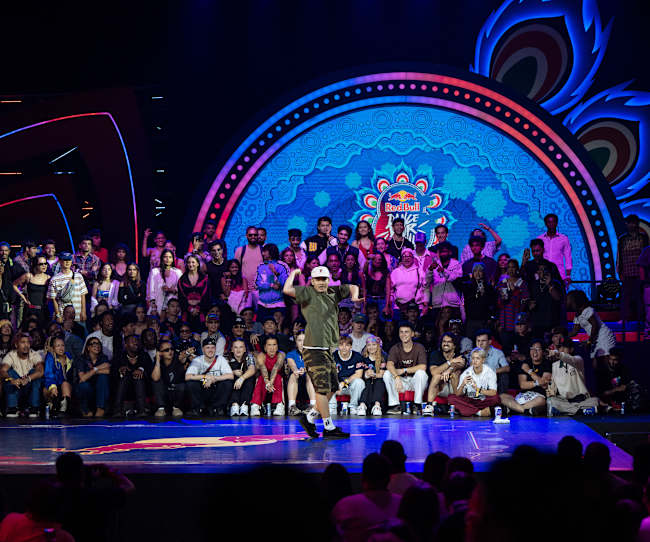De danser uit Vietnam versloeg de gerenommeerde Franse hiphopdans...
DANCE
5 minuten lezen
F1 2025: nieuw seizoen met nieuwe regels!
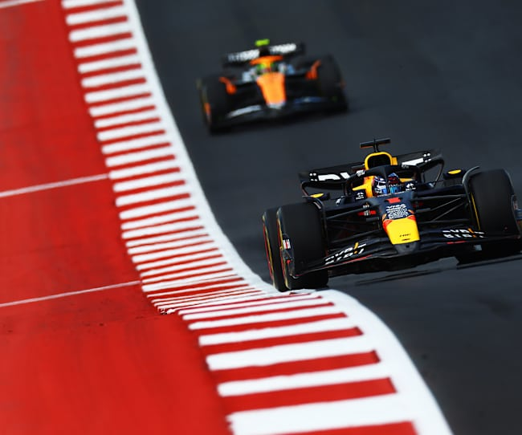Het Formule 1-seizoen 2025 is het laatste jaar voordat er grote regelveranderingen...
FORMULA RACING
4 minuten lezen
Strategieën en tips van de pros om de padelservice te verbeteren
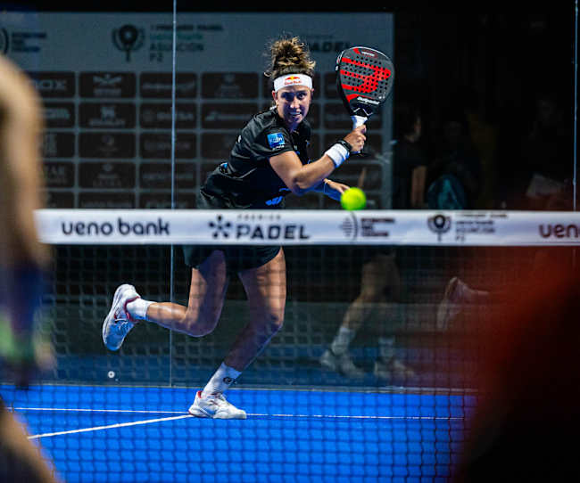Je heb de basis van padel's unieke onderhandse service onder de knie maar wi...
4 minuten lezen
Dit waren de highlights van Red Bull XP aflevering 1!
In de eerste aflevering van Red Bull Xceptional Player vielen drie kandidaten af...
GAMES
3 minuten lezen
Dit moet Max doen om in Las Vegas kampioen te worden
Max Verstappen krijgt in Las Vegas zijn eerste kand om het wereldkampioenschap te...
F1
3 minuten lezen
Events
Red Bull Stalen Ros 2024
7 september 2024
Prinssesegracht, Nederland
CYCLING
Red Bull King of the Air 2024
23 november - 8 december 2024
Cape Town, South Africa
KITEBOARDING
Red Bull Exeptional Player
17 november - 8 december
GAMES
Red Bull TV
Reckless Isolation
Een droomreis naar de Mentawai Eilanden in Indonesië
SURFING

For Reals
Red Bull-atleten gaan grensoverleggende uitdagingen aan
Seizoen 1 10 Afleveringen
La Liste: Everything or Nothing
Op jacht naar sensatie: Skiën op de hoogste bergketens ter wereld
SKIING
Meer van Red Bull
Jesse's Slide Night
18 foto's
SNOWBOARDING
Daley Monte wint Red Bull Dance Your Style National Final
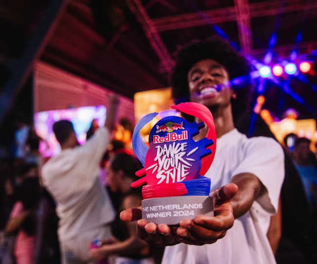Daley Monte is dé grote winnaar van de national final van de Red Bull Dance Your Style,...
Dance
2 minuten lezen
De vrouwelijke skateboarders die je moét kennen
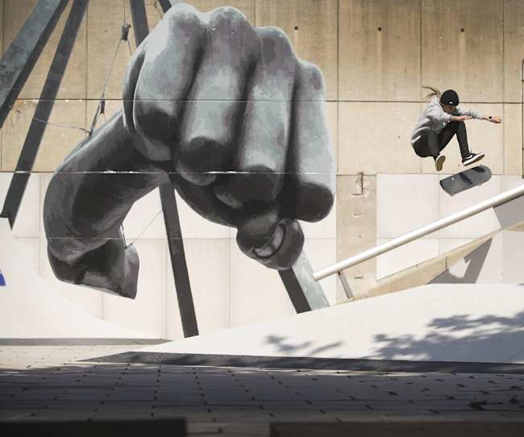Welke vrouwelijke skateboarders moet je anno 2024 kennen In dit lijstje stellen we je...
SKATEBOARDING
7 minuten lezen
Zo simuleer je het gevoel van een echte auto race!
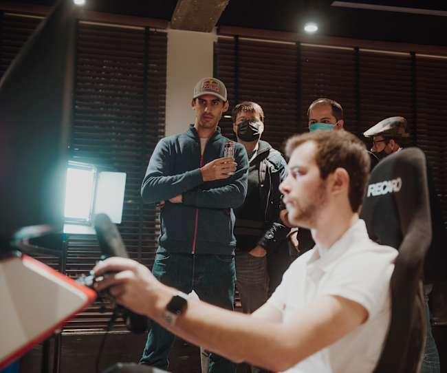Word een echte coureur met je eigen sim-race setup.
GAMES
3 minuten lezen
Ripping the concrete jungle: RiFO10 is open!
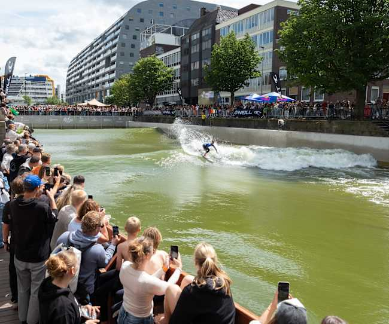Sinds dit weekend rolt de golf van Rotterdam door de Steigersgracht. Wavepool RiF010 is...
Surfing
4 minuten lezen
Het wonderweekend dat Verstappen F1-coureur maakte
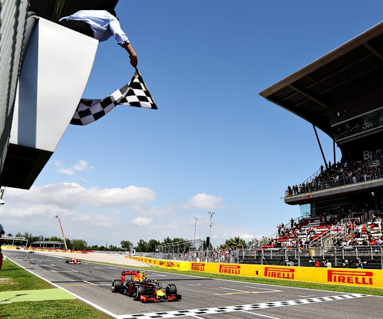Het is 28 juni, 2014. Een regenachtige dag in Neurenberg. Max Verstappen zit achter het...
F1
6 minuten lezen
Een overzicht van de beste skaters op dit moment
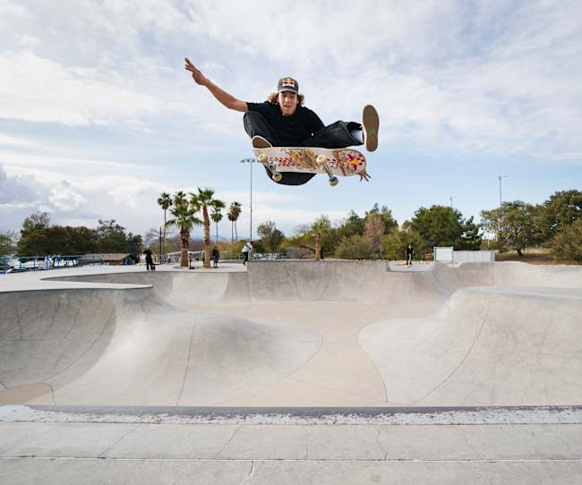Benieuwd naar de beste skaters anno 2023? In det lijstje vind je een selectie van de beste...
SKATEBOARDING
3 minuten lezen
Deze BMX-termen moet jij kennen
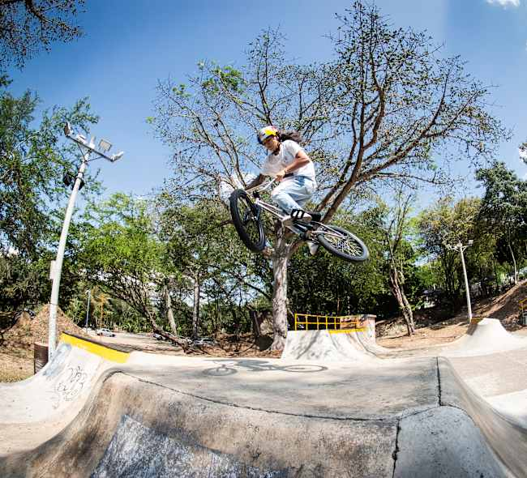Bar spin, bunny hop of no footer, termen die je als BMX-er moet weten!
BMX
4 minuten lezen